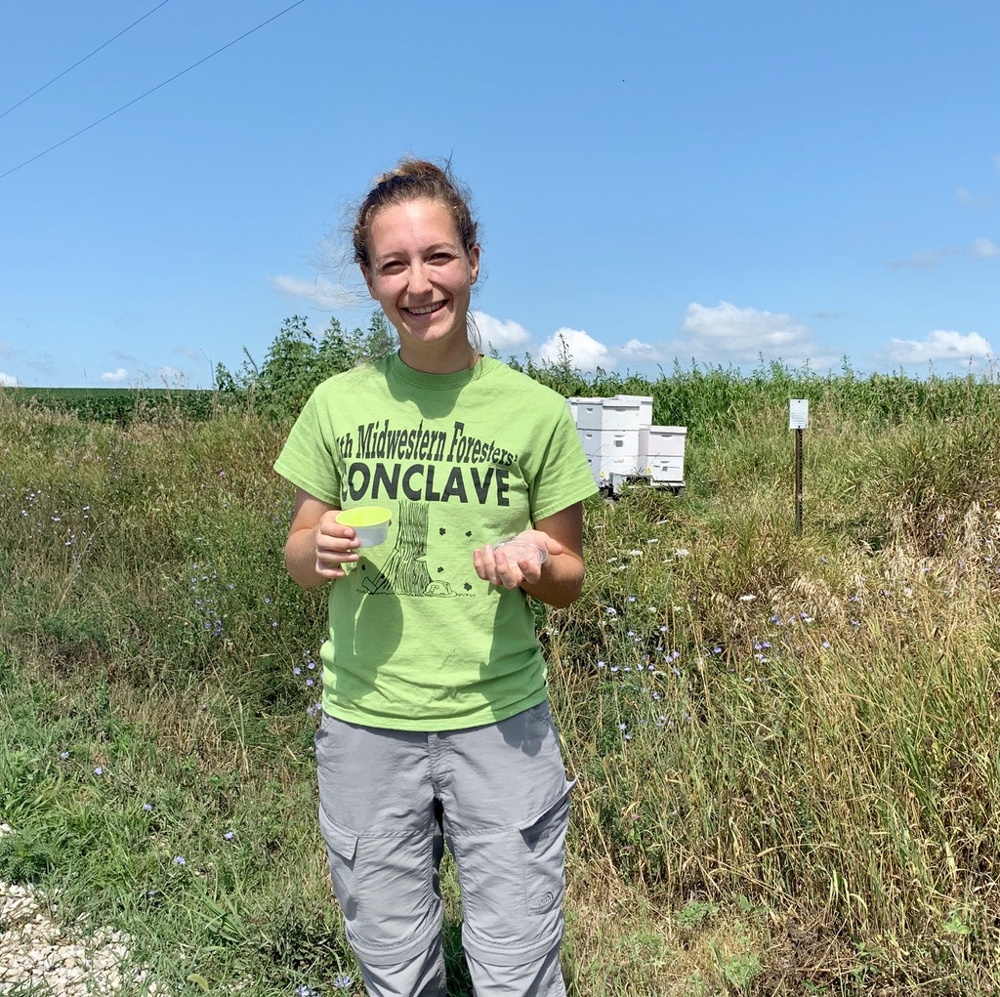

Hey everyone, My name is Caroline Murray, and I'm a master's student with a co-major in Entomology and Sustainable Agriculture. I am also completing my certificate in GIS here at Iowa State. Most of my experience is in GIS - I have completed several courses while at Iowa State, primarily in the Department of Natural Resources. I have also taken an introductory course in coding with R, so I am fairly comfortable using the R Studio platform. Once upon a time in high school I was exposed to HTML coding, however, I would say that my experience with either HTML or JavaScript is primitive at best. I hope to gain experience with HTML and Javascript, as well as learn ways to design interactive mapping tools to hopefully provide planning frameworks for the public as part of my graduate research.
